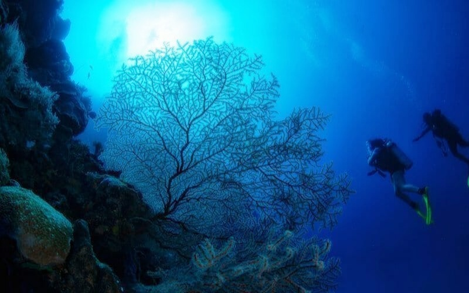
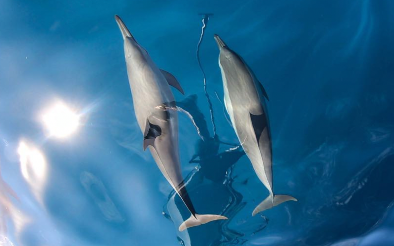

Never-before-seen scenery
Looking for popular places to visit in Palau?
From must-see attractions to local attractions, check out all the latest information from Big Brothers & Kids.
Dive Site
Hotel Site
Consultation
Palau! Top Dive Sites.
Palau is world-famous and globally recognized for its marine biodiversity
and
its efforts in oceon protection and conservation.
BLUE CORNER 15m-40m

GERMAN CHANNEL 6m-30m
German Channel (Mesikm) takes its name from a man-made channel, dredged in 1908 by Germans to ease boat passage. It has been recognized as one of the world's best dive sites, primarily known for its manta rays, schooling of sharks, and an abundance of fish.

ULONG CHANNEL 5m-20m
One of the best drift dives in the world; the dive begins at the mouth of the channel where divers hook on to the reef to view hunting sharks, jacks, barracudas, and groupers up close!
Palau is open and safe for you! For more information on how you can vacation in this Pristine Paradise see our Home page for the latest travel requirements.
Palau
Travelers Tips !

Palau has become the first country to update its immigration policy and landing procedures to implement such legislation, aimed at preserving its vibrant culture and the beauty of its natural environment for future generations. It also hopes that other countries will follow suit to protect the planet for children worldwide.
When tourists arrive, they will be asked to sign the Pledge to protect our environment for our children.
Palau has created a world-first conservation pledge, stamped in passports for visitors to sign a declaration to protect its environment and culture for the next generation. This compulsory promise is made directly to the children of Palau, to preserve this country, their home. On December 7, 2017, Palau became the first country to update its immigration policy and landing procedures to implement legislation with the goal of preserving Palau’s vibrant culture and the beauty of natural environment for future generations. Based on the Palauan tradition of BUL* and written with the help of Palau’s children, the Palau Pledge will be stamped and signed in the passports of every visitor.
The pioneering project draws attention to the ecological challenges related to tourism, with the future of the Palauan children in mind. It further seeks to change the damaging impact of human activity on the local ecosystem, especially as the number of visitors to the island continues to rise. Palau has a long history of world-firsts in conservation. It was the first country to create a shark sanctuary in its national waters, the first to ban the destructive practice of bottom trawling, and in 2015, Palau’s leadership created the Palau National Marine Sanctuary: the largest fully-protected, no-take zone in the world. And all of Palau hopes that other countries will follow suit to protect this planet for the children worldwide.
All visitors must have a valid passport not less than 6 months from date of expiration and proof of return arrangements.
VISAs are NOT required. 30-days Tourist Visa will be issued upon arrival and may be extended within 7 days in advance with approval of the Chief of Immigration for a fee of US$50.00 before expiration date of the visa. (Note: Maximum of 90 days: 30 days upon arrival plus 2 extensions at US$50.00 fee per extension. After which visitors must exit the country). Citizens of United States of America, Federated States of Micronesia, Republic of the Marshall Islands, Guam, and the Common Wealth of Northern Marianas Islands with valid passports are issued 1 year Visa upon arrival. Citizens of Myanmar and Bangladesh must have a pre-approved visa.
For more information about extended stay in Palau, please call the Bureau of Immigration at (680) 488 - 2498 or 2678, Mondays to Fridays at the hours 7:30am - 4:30pm or e-mail inquiries to imm@palaunet.com.
Upon Arrival, All Visitors Must Sign the Palau Pledge, which is stamped into their passports.
PUBLIC NOTICE: Palau Pristine Paradise Environmental Fee (PPEF)
In accordance with RPPL No. 10-16, effective January 1, 2018, the PPEF of One Hundred Dollars ($100 USD) shall be included in the price of every international airline ticket into the Republic of Palau. The ticketing airline shall be responsible for collecting the PPEF.
In the event the PPEF was not included in a ticket issued on or after January 1, 2018, it shall remain the responsibility of the airline to transmit the appropriate fee per arriving passenger to the National Treasury. For any tickets sold prior to January 1, 2018, with the passenger arriving and/or departing after January 1st, the BCBP shall continue to collect and charge the same fees totalling Fifty Dollars ($50 USD) upon departure for any airline passenger who arrived in the Republic of Palau prior to the PPEF implementation date and is departing on a ticket purchased before January 1, 2018. The amount collected upon departure in this situation shall be a Thirty Dollar ($30 USD) “Green Fee” and Twenty Dollar ($20 US) departure tax for a total of Fifty Dollars ($50 USD) for every non-Palauan passport holder. Such passenger must provide a copy of their ticket and any other supporting documentation as required.
You will need your passport and boarding pass, along with a ticket, e-ticket receipt or a printed e-ticket confirmation. Please make sure you have all these documents with you.
Palau expresses its deepest thanks for your support through the PPEF. The PPEF will help provide the financial and moral support necessary to continue our mission of protecting Palau’s natural environment for future generations. With your help, we will continue to hold true to our reputation as one of the most beautiful places and best diving destinations in the world.
Here is a list for all types of tickets:
Location and Geographic Description
7° 30' North Latitude, 133° 30' East Longitude
Official Languages
English is spoken widely and Palauan is a fun language to learn. Many service providers speak English, Mandarin, Cantonese or Japanese.
Time Zone
When it's Noon Monday in Palau, it is.
Korea 12:00 P.M Monday
Tokyo 12:00 P.M. Monday
Manila 11:00 A.M. Monday
Sydney 1:00 P.M. Monday
Los Angeles 7:00 P.M. Sunday
Climate
Palau enjoys a pleasantly warm climate all year round with an annual mean temperature of 82° degrees F. (27° C.). Rainfall can occur throughout the year, and the annual average is 150 inches. The average relative humidity is 82%, and although rain falls more frequently between July and October, there is still much sunshine. Typhoons are rare as Palau is located outside the typhoon zone.
What to Wear
Palau is ideal for island casual, but please no swimming suits or short shorts/skirts in towns or villages. Rain or shine, it is helpful to carry a hat, sunglasses, sunscreen protection or waterproof raincoat.
Currency & Credit Cards
The official currency of the Republic is the U.S. Dollar. Visa, JCB, and MasterCard are widely accepted at stores and visitor facilities. There are FDIC insured banks and major hotels with limited foreign currency exchange. In addition, Palau has money transfers through bank institutions.
Driving
Please obey posted speed limits and avoid passing other cars in towns or villages. Seatbelts should be worn for your safety.
Phone, Mobile and Internet Services
The Palau National Communications Corporation (PNCC) offers nationwide mobile service, with 4G/3G coverage in Koror and Airai, and 3G/2G in other states.
Tipping
Tipping is optional, but appreciated.
SOUTHWEST ISLANDS
SOUTHWEST ISLANDS As they are located about 300-450km southeast of the main archipelago of Palau, the Southwest Islands are accessible only by private yacht or charter vessels.
TO PELELIU AND ANGAUR
Peleliu and Angaur States are south of Koror and the Rock Islands, and are accessible by boat, helicopter, or small aircraft. In addition, regularly scheduled ferry service is available for a minimal fee.
TO THE ROCK ISLANDS
These famous mushroom-shaped jewels are accessible by most tour operators. The best way to see them is a boat ride on a Rock Island Tour combined with a stop at Jellyfish Lake.
FROM KOROR TO BABELDAOB
While the Palau International Airport is located in Airai State in Babeldaob, many of the hotels and resorts, as well as the tour operators are located in Koror. Babeldaob is joined to the inter-connected islands of Koror State by the Japan-Palau Friendship Bridge, and a sealed highway circles Babeldaob from both the east and west sides, up to the tip of Ngerchelong State.
TO KAYANGEL
A coral atoll north of Babeldaob, Kayangel State is accessible only by boat charter or helicopter.
Every person who imports into the Republic any of the product set forth as follows in items (1), (2), (4), (5), (6), (7), (8), (9), and (10) below regardless of purpose, and any of the other products listed above into the republic for commercial purpose, shall be assessed and levied and shall pay taxes thereon at the following rates.
1.(1) Cigarettes: $2.00 per every 20 cigarettes.
2.Tobacco Product Other Than Cigarettes: 117.65 per kg.
3.Perfumery, Cosmetics and Toiletries : 25%.
4.Carbonated Soft Drinks: $0.10 per 12 fl oz.
5.Beer: $0.03 per ounce.
6.Liquor: $0.30 per ounces.
7.Grape or Other Fruit-Base Wine: $0.20 per fl oz. Or meiric equivalent.
8.Wine coolers or cooking wine with a recognized alcohol content $0.05 per os. Or metric equivalent.
9.Bottled Water : 25% ad valorem All other alcoholic beverage products, including liquors, sake, and alcoholic products without grape or fruit hase: $0.30 per fluid oz. Or metric equivalent.
10.Liquid Fuel and Liquid Petroleum-Base Products : $0.05 per Gallon.
11.Vehicle S Or Vehicles Chassis : 5% Ad valorem + $250.00
12.All Other Import Products : 3%.
Personal Exemptions
Cigarettes
Any person arriving in the republic by common carrier may bring in up to one carton of cigarettes (10 pack where each pack contain 20 cigarettes for a total of 200 cigarelles) without taxation.
Tobacco Product other than Cigarettes
Any person arriving in the republic by common carrier may bring in either one box of cigars (50 or fewer cigars), or one ounce of pipe tobacco, or one package of chewing tobacco not to exceed 3 oz ounces, without taxation.
Alcoholic Product
Any person arriving in the republic by common carrier may bring in a quantity of alcoholic product, as selected by that person, in an aggregated amount not to exceed two (2) liters, as exempted from import taxes.
IMMUNIZATION
Cholera and Yellow Fever immunizations are required for those arriving from infected areas.
MEDICAL SERVICES
Palau has one hospital, the Belau National Hospital (BNH) for outpatient and emergency cases. For diving emergencies, there is an operational Hyperbaric Chamber which is also located at the BNH. Belau National Hospital contact number is +680 488 2552/2553. There are Ministry of Health Dispensaries in Babeldaob, Peleliu Angaur, and Kayangel. Palau also has three private medical clinics, one of which is open during evenings.
Palau
Beneath The Sea Experiences
"We have done thousands of dives all around the world in some of the most pristine areas,
but
in few places we have seenwhat we have seen here."
Dive shop
-
Blue Marlin
Phone Number:(680) 488-2214
-
Cruise Control
Phone Number:(680) 488-6691
-

Dari Divers Palau
Phone Number:(680) 488-6767
-
Day Dream
Phone Number:(680) 488-3551
-
Fish 'n Fins
Phone Number:(680) 488 2637
-
IMPAC Tours
Phone Number:(680) 488 0606
-
MK Hotel & Dive Resort
Phone:(680) 488-8082
-
NECO Marine
Phone Number:(680) 488 2009
-
Palau Diving Center
Phone Number: 680 488 2277
-
Peleliu Divers
Phone Number:(680) 345 1058
-
Peleliu Adventure
Phone Number:(680) 345 2090
-
Rock Island Tour Company, LTD.
Phone Number:(680) 488 1573
Palau
Palau island map
Major tourist destinations
- Kayangel
- Stone monolith
- Ngardmau Waterfall
- Organic farm
- Melekeok
- Koror-Babeldaob Bridge
- Palau International Airport
- Palau Milky Way
- Jellyfish Lake
- German channel
- Blue Corner
Kayangel
Kayangel is located in the northernmost province of Palau, about 24km north of Babeldaob Island. The area is 1.4 km2, and the population is 54 (as of 2015). It consists of three atolls: Velasco Reef, Ngaruangel Atoll, and Kayangel Atoll, of which only Kayangel Island in Kayangel Atoll is inhabited. The rest of the islands are uninhabited and inhabited by algae.
Stone Monolith
Stone Monolith, located at the tip of Babeldaob Island, has huge pillar-shaped stones scattered in the grassland area, and calls these mysterious piles of stone pillars. Among them, there is a large rock in the shape of a human face, but it is not known who made these stones, when and why, which is one of the mysteries of Palau.
Ngardmau Waterfall
Excluding the ocean tour in Palau, the most popular tour among land tours is a tour to experience Palau's largest waterfall, Garadmau Falls, located in the unknown jungle of Babeldaob. It is a tour where you can go through the jungle with light trekking, play in the water in a wonderful valley, and enter a huge waterfall to feel the magnificence of Mother Nature with your whole body. After the trek, feel like an explorer and stop by Palau's Mystery Stone Monolith to experience the mysterious legend.
Organic farm
Fruit is not abundant in Palau. It is the only farm built by handing down fruit cultivation methods in Taiwan 20 years ago, and these days it has become a tourist course. A variety of fruits were grown on the farm here, and all the fruits were covered with bags and netted, making it feel like you were in an orchard in Korea. In particular, dragon fruit, which is said to look like a dragon, is popular with people and is expensive. Fruits grown here do not have high sugar content like fruits in Korea, but they are protein, so they have a simple taste that you will not get tired of eating a lot.
Melekeok
The capital is Ngerulmud, but in fact Ngerulmud is neither a city nor a village. There are only the National Assembly, the Judiciary, the President's Office, and the administrative buildings in the field. It also holds the title of having the least number of inhabitants among the capitals of countries in the world. Sometimes Melekeok Province, where Ngerulmud is located, is sometimes introduced as the capital of Palau. The largest city is Koror, the former capital, where nearly 70% of the population resides, not on the main island, the largest, but on the island of Koror to the southwest. Koror Island is connected to the main island by a bridge.
Koror-Babeldaob Bridge
As the name of the largest bridge in Palau, the exact name is Koror-Babeldaob Bridge, abbreviated as K-B Bridge. It is a bridge that connects Korod Island and the main island, Babeldaob, and important communication facilities, water and electricity are supplied to Korol through this bridge. It was first completed in 1977 by a Korean construction company, but the bridge was cut in 1996 due to poor construction. At this time, the residents of Korol suffered great inconvenience without water and electricity for about three months, but the bridge was completed again in 2002 with the help of Japan.
Palau International Airport
Roman Tmetuchl International Airport is Palau's primary international airport, located in Airai, south of the island of Babeldaob, Palau. Occasionally, Airai International Airport is named after a geographical location, Koror International Airport is named after its proximity to Palau's former capital, Koror, and Babel Daob International Airport is named after the island on which it is located. It is accepted. The most commonly used name is also 'Palau International Airport'.
Palau Milky Way
Palau is a small island country in the Pacific Ocean, and is famous for the ‘Milky Way’, a sea that boasts an immaculate color as if milk has been released. The happiness of applying fine coral powder accumulated over a long period of time all over the body can only be experienced in Palau.
Jellyfish Lake
Ongeim'l Tketau Jellyfish Lake is full of harmless jellyfish. A diver can swim among the many floating jellyfish without any problems. Jellyfish Lake is home to a large number of jellyfish, providing visitors with a unique experience. Currently, Jellyfish Lake is open, but measures to preserve the jellyfish population and protect the lake will continue to be implemented. Therefore, you must obtain a permit to visit Jellyfish Lake.
German channel
'German Channel', one of Palau's diving points, is famous as a point where you can see mantas. You can see mantas feeding with their mouths open as if performing tricks. If you sit quietly around the cleaning station and wait for the manta, you can see the manta being cleaned by the cleaner wrasse.
Blue Corner
This is the Blue Corner, one of the representative points of Palau. In fact, Palau meets the tide at any point, In the case of the Blue Corner, there is a particularly strong current, so it is a place to enjoy current diving. It's because of the geography. Different currents flow from the three places, so you can usually encounter strong currents in places where you would hang a bird hook. Plankton rises from the bottom, and everything from small fish to sharks, You can meet a variety of fish.